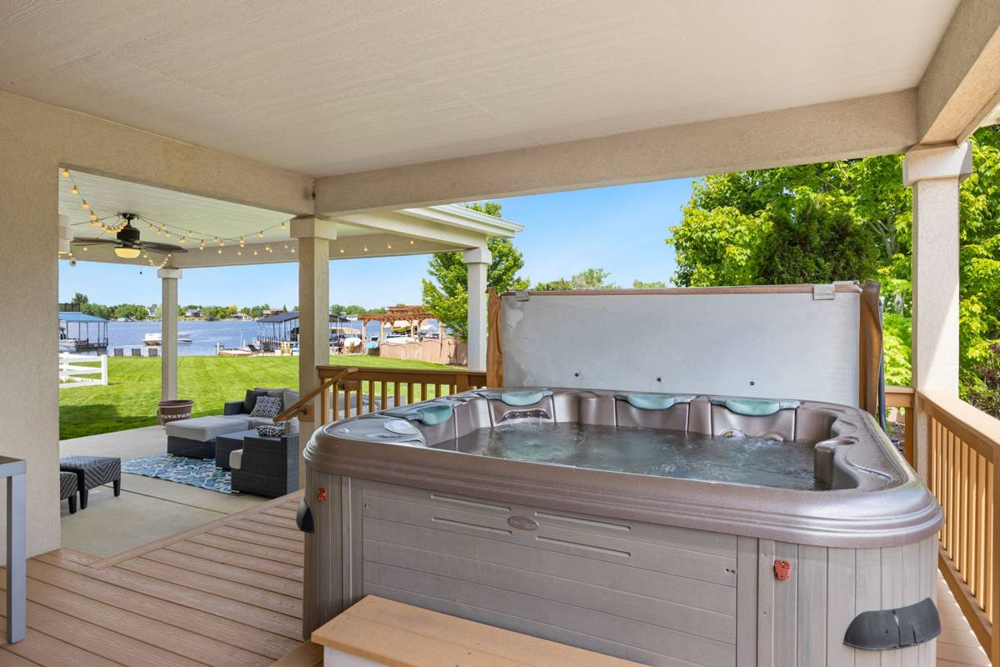

Quick answer: Hero’s tears down and hauls off hot tubs, backyard sheds, playsets, and trampolines across Dallas-Fort Worth, usually in a single morning. Access and material drive how involved the work is more than size does. Every job is walked and quoted firm before anything comes apart.

These three jobs share a theme: they are the backyard items that outlive their welcome by about five years, because getting rid of them feels like a project. It is one, just not yours. Here is what each one actually involves.
Hot tub removal
A hot tub is 400 to 900 pounds of shell, frame, and waterlogged foam that does not fit through any gate in Texas. The crew disconnects nothing electrical (have an electrician kill and cap the circuit first), drains what is left, and then either walks it out on dollies or cuts it into sections with a reciprocating saw right in place. Cutting sounds dramatic; it is the standard method and takes about an hour.
- Makes it harder: second-story decks, tight side yards, built-in surrounds that need dismantling.
- Makes it easier: draining it the day before, clear path to the driveway, gate wider than 36 inches.
Shed teardown
A typical 8x10 backyard shed comes down in a morning: contents cleared, panels unbolted or cut, frame dropped, everything loaded. Metal sheds are lighter but slower because of sharp panel handling; wood sheds are heavier but come apart faster. Roofing shingles on the shed add disposal weight, and a concrete pad is its own separate conversation.
- Makes it harder: a full shed (clear it, or have us include the contents in the load; what is inside the shed covers the fuel and chemicals that stay behind), shingled roofs, sheds attached to fences or slabs. If the fence itself is coming down too, that debris has rules of its own, covered in fence and deck teardown debris.
- Makes it easier: emptying it first, unlocking the gate, flagging the sprinkler lines.
Playset and trampoline removal
The swing set the kids outgrew is mostly bolts and stubborn lumber. Crews unbolt what unbolts, cut what does not, and separate the metal for recycling through the yards in the TCEQ recycling directory. Trampolines are the lightest work of the three. Indoor equipment is a different problem entirely, and treadmills and home gyms covers the stairwell version of it. Solid wood playsets in genuinely good shape can sometimes be rehomed through neighborhood groups if you have the lead time; weathered ones are not safe to pass on. The old grill and the patio set often go on the same visit, and hauling off the old grill and patio furniture covers the propane cylinder rule.
Bundle the backyard: hot tub plus shed plus the pile behind the shed goes better as one truck visit than three separate calls, and doing it together works out in your favor. The teardown itself is covered on our hot tub, shed, and playset page, the brush it uncovers under yard debris, and if the pile can wait, Dallas collects brush and bulky items monthly and Plano runs bulky waste collection on its own calendar. See how junk removal works in DFW.
Frequently asked questions
How does hot tub removal work in DFW?
An electrician kills and caps the circuit, you drain the tub the day before, and the crew walks the shell out or cuts it into sections in place. Access and whether it needs cutting drive how long it takes.
How long does shed removal take?
A standard 8x10 comes down in a morning, depending on material, contents, and roofing. Quoted firm on sight before any work starts.
Do you need to drain a hot tub before removal?
Yes, ideally the day before. The crew can pump the last few inches but cannot safely move or cut a full tub.
Can a playset be donated instead of scrapped?
Good-condition wood sets sometimes find takers if disassembled with lead time. Weathered sets get recycled and disposed of instead.
Related reading: how junk removal works in DFW and where to donate furniture and household goods in DFW. Wondering if your item makes the list? See what we will and will not take, and for a whole-home job, the estate cleanout checklist. If the backyard also has a pool coming out, above-ground pool removal covers the water, the liner and the frame.